Kiểm thử phần mềm · Theo video
Kiểm thử phần mềm: 10 giờ trong 30 slide
Lộ trình từ nền tảng, các loại kiểm thử, đến nghề kiểm thử tự động.

00:00 Giới thiệu
Vì sao cần kiểm thử
- Không phần mềm nào hoàn hảo, nhưng cần đo và đảm bảo chất lượng trước khi đưa ra dùng.
- Mục tiêu: chương trình chạy không lỗi nghiêm trọng.
00:00 Giới thiệu
Lộ trình của khóa
- Nền tảng kiểm thử → thủ công và tự động → các loại kiểm thử → kiểm thử hiệu năng, di động, API → nghề kiểm thử tự động và câu hỏi phỏng vấn.
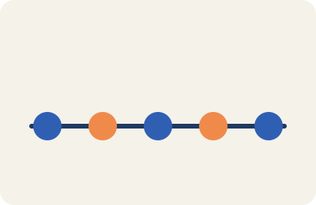
03:29 Tổng quan kiểm thử
Kiểm thử là gì
- So sánh kết quả thực tế với kết quả mong đợi.
- Tìm lỗi, thiếu sót trong yêu cầu, và kiểm tra thiếu thành phần.
- Làm bằng tay hoặc công cụ tự động.
06:00 Vòng đời phát triển phần mềm (SDLC) và mô hình Waterfall, Spiral
Các giai đoạn của SDLC
- Thu thập yêu cầu → phân tích và đặc tả → thiết kế (cấp cao và chi tiết) → lập trình → kiểm thử → triển khai và bảo trì.
- Mỗi giai đoạn có tài liệu đầu ra là đầu vào của giai đoạn sau.
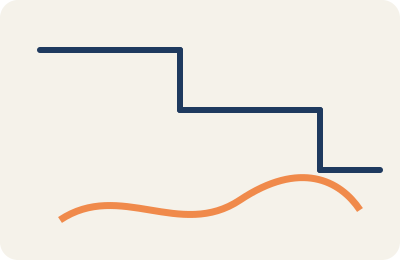
06:00 Vòng đời phát triển phần mềm (SDLC) và mô hình Waterfall, Spiral
Mô hình Waterfall và Spiral
- Waterfall: làm tuần tự, mỗi giai đoạn xong mới sang giai đoạn sau. Dễ hiểu, khó sửa khi đã đi xa.
- Spiral: làm theo vòng lặp, mỗi vòng có phân tích rủi ro. Phù hợp dự án lớn, rủi ro cao.

17:03 Mô hình Xác minh và Thẩm định (V&V)
Xác minh và thẩm định khác nhau thế nào
- Xác minh (verification): kiểm tra không chạy code, ví dụ duyệt tài liệu, đánh giá, đi qua từng bước.
- Thẩm định (validation): kiểm tra bằng cách chạy code, ví dụ kiểm thử chức năng và phi chức năng.
- Trong mô hình V&V, hoạt động phát triển và kiểm thử diễn ra song song, không có giai đoạn kiểm thử riêng ở cuối.
33:15 Tài liệu kiểm thử
Các loại tài liệu chính
- Kế hoạch kiểm thử: chiến lược, tài nguyên, môi trường thử.
- Kịch bản kiểm thử và ca kiểm thử: nêu cần kiểm gì và kết quả mong đợi.
- Bảng truy vết: nối yêu cầu với ca kiểm thử để biết đã phủ đủ chưa.
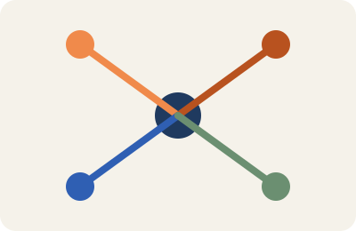
33:45 Vòng đời lỗi và tầm quan trọng
Vòng đời một lỗi
- Lỗi được tìm thấy → ghi nhận → sửa → kiểm lại → đóng.
- Ghi đủ thông tin khi báo lỗi để người sửa tái hiện được.

1:02:03 Kiểm thử thủ công là gì
Kiểm thử thủ công
- Người thật thao tác trên ứng dụng theo ca kiểm thử, đánh giá thiết kế, chức năng, hiệu năng.
- Hữu ích khi không tự động hóa được, ví dụ thử ứng dụng trong điều kiện không đoán trước.

1:05:20 Khi nào nên kiểm thử thủ công
Các tình huống phù hợp
- Kiểm thử khám phá: dựa vào kinh nghiệm và trực giác khi tài liệu kém hoặc thiếu thời gian.
- Chỉ nên làm thủ công khi cần đánh giá của con người, không nên làm lại việc máy làm tốt hơn.
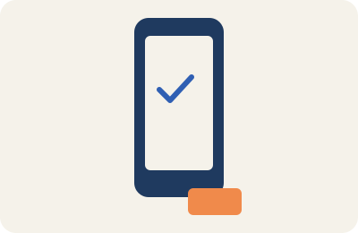
1:18:25 Kiểm thử tự động: là gì và vì sao
Vì sao nên tự động hóa
- Kiểm thử thủ công lặp lại dễ bỏ sót lỗi và mệt; mỗi lần sửa phải chạy lại toàn bộ.
- Tự động chạy lại nhanh, chính xác hơn, đặc biệt khi cần lặp nhiều lần.
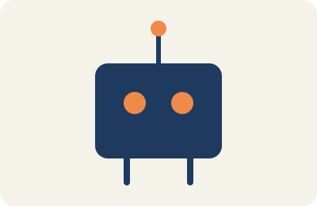
1:25:55 Quy trình kiểm thử tự động
Các bước triển khai
- Lập kế hoạch: xác định mục tiêu và chọn ca nào tự động hóa trước.
- Chọn công cụ, viết kịch bản, chạy, phân tích kết quả và bảo trì kịch bản.

1:39:13 Các loại kiểm thử
Chức năng và phi chức năng
- Kiểm thử chức năng: đơn vị, tích hợp, hệ thống, hồi quy, chấp nhận của người dùng.
- Kiểm thử phi chức năng: tài liệu, cài đặt, hiệu năng, độ tin cậy, bảo mật.

2:03:02 Kiểm thử đơn vị
Kiểm thử đơn vị
- Cô lập từng phần nhỏ nhất (hàm, lớp) và kiểm tra riêng.
- Phần càng nhỏ thì test càng chi tiết và dễ tìm nguyên nhân lỗi.
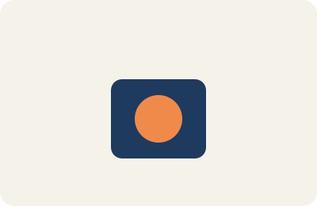
2:21:21 Kiểm thử tích hợp
Kiểm thử tích hợp
- Sau khi các đơn vị đã đúng riêng, ghép từng cái lại rồi kiểm xem chúng phối hợp đúng không.
- Lỗi hay nằm ở chỗ giao tiếp giữa các phần.
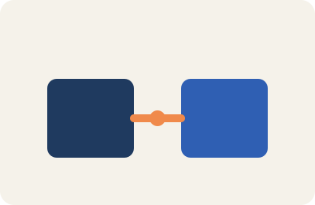
2:43:07 Kiểm thử hồi quy
Kiểm thử hồi quy
- Chạy lại các ca cũ sau mỗi thay đổi để chắc chắn phần cũ không bị hỏng.
- Cần chọn lọc ca để không tốn quá nhiều thời gian; tự động hóa giúp nhiều.
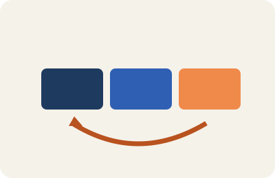
3:24:30 Kiểm thử sanity
Kiểm thử sanity
- Đánh giá nhanh một bản build sau thay đổi nhỏ, xem có đủ ổn để kiểm thử tiếp không.
- Phạm vi hẹp, tập trung vào chức năng vừa đổi.

3:39:48 Kiểm thử smoke
Kiểm thử smoke
- Chạy ngay trên bản build mới để xem chức năng chính có hoạt động không.
- Nếu smoke test hỏng thì không cần chạy tiếp các kiểm thử sâu hơn.
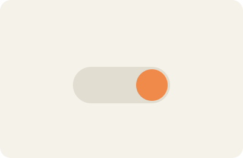
3:49:55 Kiểm thử hiệu năng: tổng quan
Kiểm thử hiệu năng
- Đo tốc độ, độ ổn định và khả năng chịu tải của hệ thống.
- Có các loại: tải, căng thẳng (stress), và một số loại khác.

4:08:01 Kiểm thử căng thẳng (stress)
Kiểm thử căng thẳng
- Đưa hệ thống vượt mức tải bình thường để xem nó chịu được đến đâu và sụp ở điểm nào.
- Giúp biết hệ thống có tiếp tục ổn định khi tải cực đại hay không.
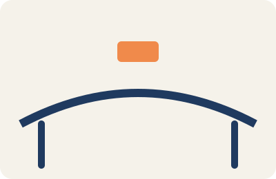
4:22:07 Kiểm thử tải (load)
Kiểm thử tải
- Mô phỏng nhiều người dùng cùng lúc để xem ứng dụng hoạt động ra sao trong tải thực tế.
- Xác định số người đồng thời tối đa mà hạ tầng đáp ứng được.
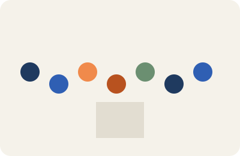
4:40:15 Kiểm thử ứng dụng di động
Kiểm thử di động
- So sánh thủ công và tự động trên điện thoại.
- Phân biệt ứng dụng native, hybrid và web; mỗi loại có cách kiểm khác nhau.
5:41:40 Kiểm thử Agile
Kiểm thử trong Agile
- Phát triển lặp theo từng vòng ngắn; yêu cầu thay đổi qua trao đổi giữa khách hàng và nhóm.
- Kiểm thử diễn ra liên tục trong mỗi vòng, không đợi đến cuối.
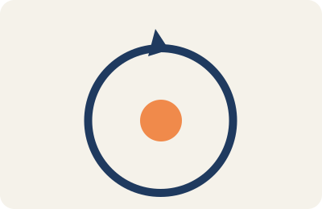
6:16:05 Kiểm thử đa trình duyệt
Đa trình duyệt và đa hệ điều hành
- Trang web phải hoạt động đúng trên nhiều trình duyệt và hệ điều hành, không chỉ một.
- Lỗi thường đến từ khác biệt cách trình duyệt hiển thị HTML, CSS và JavaScript.
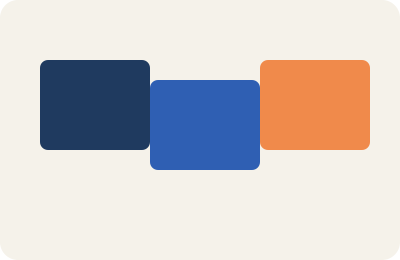
6:32:42 JMeter và Jenkins
Chạy kiểm thử hiệu năng trong CI
- Jenkins tự động build và chạy kiểm thử mỗi khi có thay đổi.
- Tích hợp JMeter giúp kiểm hiệu năng liên tục, không phải chờ đến cuối.
6:54:43 Kiểm thử API
Kiểm thử API
- API là cầu nối để các phần mềm nói chuyện với nhau.
- Kiểm thử API: gửi yêu cầu, kiểm mã trạng thái, dữ liệu trả về và thời gian phản hồi.
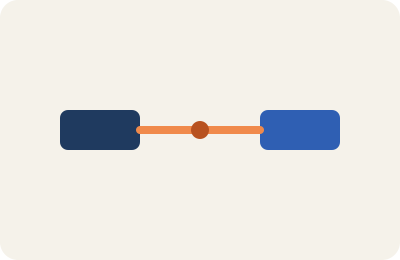
7:39:41 Trở thành kỹ sư kiểm thử tự động
Lộ trình nghề
- Kỹ sư kiểm thử tự động viết và bảo trì kịch bản kiểm thử, làm việc với nhóm phát triển.
- Cần nắm kiểm thử cơ bản, một ngôn ngữ lập trình, và một công cụ tự động hóa.
7:55:12 Câu hỏi phỏng vấn kiểm thử thủ công
Câu hỏi thường gặp
- Kiểm thử phần mềm là gì, vì sao phải kiểm thử.
- Khác nhau giữa kiểm thử thủ công và tự động, và khi nào chọn cái nào.

8:49:08 Câu hỏi phỏng vấn kiểm thử tự động
Câu hỏi về tự động hóa
- Tự động hóa là gì, và có những loại tự động hóa nào.
- Chọn ca để tự động hóa thế nào; xử lý kịch bản hỏng ra sao.
9:35:02 Câu hỏi phỏng vấn JMeter (một phần)
Kiểm thử hiệu năng
- Kiểm thử hiệu năng nhằm đảm bảo ứng dụng chạy tốt dưới tải công việc.
- Các loại chính gồm kiểm thử tải, căng thẳng và một số loại khác (phần sau chưa có lời).
- Từ khoảng 9:06 đến hết video (10:17): chưa có lời. Muốn làm thì phải tải lại âm thanh (đã xóa).
- Các chương 9:35 trở đi chỉ có một phần lời, nên slide 30 có thể thiếu.
- Chưa xem khung hình minh họa của video; mọi hình là hình mới.
- Ảnh chưa được gen, mới có prompt.